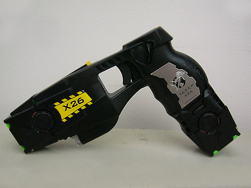

The Conducted Energy Device (CED)

Thousands of police departments worldwide equip their patrol officers with the Conducted Energy Device (CED). The CED is a type of electroshock weapon used to subdue a person by administering an electric shock that disrupts superficial muscle function. Use of the CED by police has caused the number of officer-involved firearms-related shootings to decrease.
Taser International Inc. developed a CED called the ‘taser gun’ that is used by more than 2500 law enforcement agencies around the world. However, this is a brand name and not an accurate term for all CEDs. Because of the popularity of the taser gun among law enforcement agencies, CEDs are often called taser guns.
In 1991, friends of Rick and Tom Smith were brutally murdered by an angry motorist. Concerned about the increasing violence in their neighbourhood, the Smith brothers then purchased a handgun for their mother, but she refused to use it. Hoping to protect people such as their mother who were uncomfortable with guns, the Smith brothers and inventor Jack Cover in 1993 began the American company Taser International Inc. to produce the taser gun.
Closely resembling a handgun, a CED is an electrical device that works as a contact weapon or as a projectile weapon. When used as a contact weapon, the CED is placed directly upon a body part of a suspect. When used as a projectile weapon, two small weighted barbs attached to lengths of copper wire are propelled from the CED embed in the skin or clothing of a suspect. An electrical charge of approximately 200 000 volts to 300 000 volts is then cycled through the suspect. This sudden charge of electricity immobilizes the suspect through a process commonly referred to as neuromuscular incapacitation, characterized by a sensation of extreme discomfort and immobilization until the electrical current is shut off.
Modern CEDs fire small dart-like electrodes attached to copper wires that connect to a cartridge attached to the front of the device. CED electrodes are propelled by small gas cartridges similar to those in air rifles. The maximum effective range of most CEDs is approximately 6.5 metres (21 feet). Older CED models fire electrodes that embed into the skin and superficial muscle tissues layers, but they have difficulty penetrating thick clothing. Newer CEDs fire similar electrodes; however, these electrodes release a pulse and/or arc of electricity that disrupts nerve and muscle function without penetrating the skin. Consequently, newer CEDs can immobilize a subject wearing many layers of clothing.
The term TASER is an acronym (Thomas A. Swift's Electric Rifle) created by American Jack Cover in 1969. Mr. Cover named it after a teenage science fiction book character named Tom Swift.